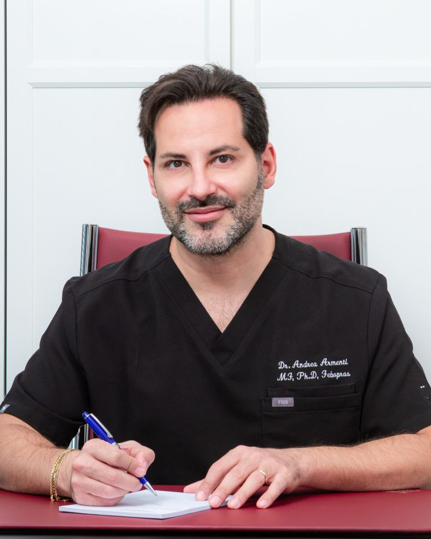
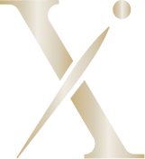
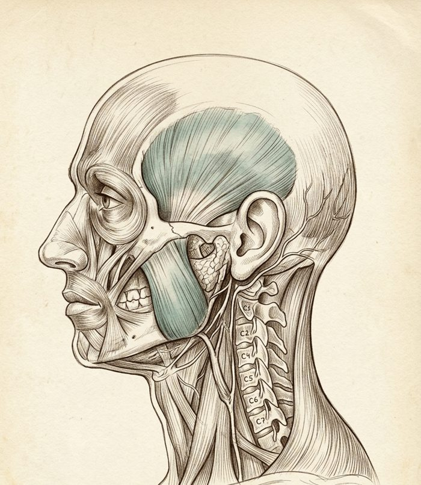

Sono le domande che il dott. Armenti fa all’inizio di una valutazione. Dopo ognuna trovi cosa c’entra quella cosa col mal di testa.
Comincia →
I muscoli che chiudono la mandibola — il massetere e il temporale — lavorano anche durante il sonno. Quando la contrazione notturna è intensa, il dolore può essere già presente prima di alzarsi.